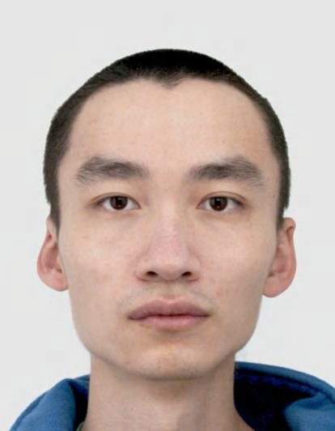

|
. This document has been written using GNU TeXmacs; see www.texmacs.org.

Email: zhouhang DOT mao AT gmail DOT com
Currently, I am a postdoc at JGU Mainz. Previously, I was a postdoc at Korteweg-de Vries Institute for Mathematics under Lenny Taelman. Before that, I was at Institut de Mathématique d'Orsay, under Kęstutis Česnavičius' ERC Grant (and help, of course). Before that, I was a PhD student at Sorbonne Université, advised by Matthew Morrow. Before that, I was an international student at ENS. Before that, I was an undergrad at Fudan University. Detailed CV.
Research interests (Thème de recherche): The interaction between topology and algebraic geometry: derived algebraic geometry (géométrie algébrique dérivée), algebraic topology (topologie algébrique), arithmetic geometry (géométrie arithmétique), algebraic -theory (-théorie algébrique), topological cyclic homology (homologie cyclique topologique).
The PDF's here are supposed to be newer than the latest arXiv versions.
Noncommutative relative de Rham–Witt complex via the norm, arXiv:2410.05998, latest pdf
Equivariant aspects of de-completing cyclic homology, arXiv:2410.05994, latest pdf
Prismatic logarithm and prismatic Hochschild homology via the norm, arXiv:2409.04400, latest pdf
Revisiting derived crystalline cohomology, to appear in Bulletin de la Société Mathématique de France, arXiv:2107.02921, latest pdf
Perfectoid rings as Thom spectra. Sel. Math. New Ser. 29, 48 (2023). https://doi.org/10.1007/s00029-023-00851-0, latest preprint
Revisiting derived crystalline cohomology, Séminaire d'Arithmétique et de Géométrie Algébrique, Université Paris-Saclay, notes
Perfectoid rings as Thom spectra, Seminar of the algebraic topology group, Université Paris Nord, slides (deformation theory: given an infinitesimal thickening , the derived base change induces an equivalence from the category of formally étale -algebras to the category of formally étale -algebras.)
M2 Mémoire: Comparisons of different constructions in algebraic -theory, pdf
2025 Spring, TA: Algebraic Geometry II
2024 Spring, TA: Modules and categories
2020-2021
2019-2020
TD LU2MA250: Series and integrals (Séries et intégrales) {non math major}
TD LU2MA122: Linear and bilinear algebra (Algèbres linéaire et bilinéaire IIa)